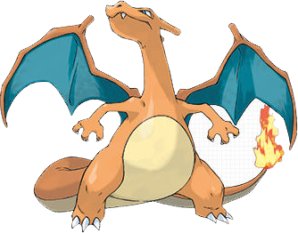

<!DOCTYPE html>
<html>
	<head>
	<meta charset="UTF-8">
		<title>if문/switch문</title>
		<script type="text/javascript">
			var input = prompt("다음의 숫자를 입력하세요.", "1 / 2 / 3");
			
			if (input != null) {	//[확인] 버튼을 누른 경우(null이 아니라면)
				if (input != "") {	//값을 입력한 경우(빈값이 아니라면)
					switch (input) {
						case "1" : document.write(""); break;
						case "2" : document.write(""); break;
						case "3" : document.write(""); break;
						default : alert("잘못 입력하였습니다"); //1,2,3 이외의 값을 입력한 경우
					}
				} else {	//값을 입력하지 않고 [확인]버튼을 누른 경우
					alert("아무것도 입력하지 않았습니다");
				}
			} else {	//[취소] 버튼을 누른 경우
				alert("취소하였습니다")
			}
		</script>
	</head>
	<body>

	</body>
</html>